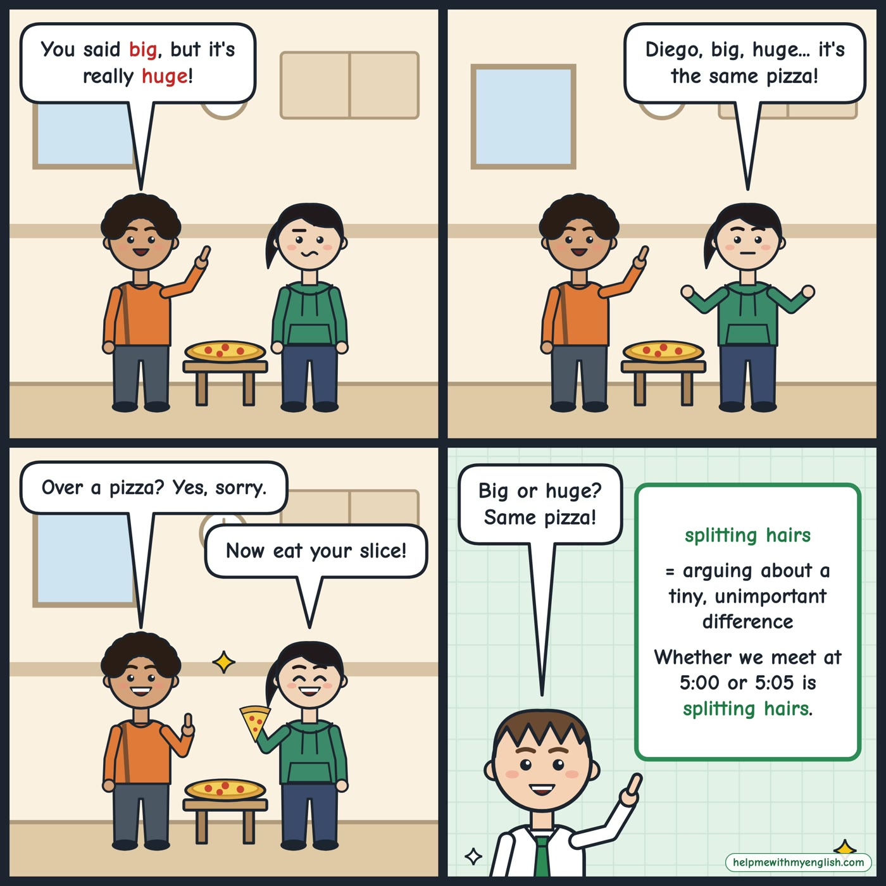

splitting hairs
Arguing about a tiny difference that is not important.
Whether we meet at 5:00 or 5:05 is splitting hairs.
Tip: Use it as a verb phrase: 'You're splitting hairs' or 'Let's not split hairs'; it can sound dismissive, so be careful when saying it directly to someone senior.
Hear it in conversation
Workbook
1. What does it mean?
In this conversation, what does 'splitting hairs' mean?
2. Fill the gap
We both want the blue sofa, so choosing between two almost identical shades of blue is just .
3. Choose the best reply
Amira: I know you said 'around eight', but it's actually 8:10, so you were late.
4. Your turn: speak
Do you know anyone who pays too much attention to small details? Tell me about them.
Show an example answer
My brother is like that. When we plan a trip, he argues about whether to leave at 7:00 or 7:15, and honestly, I think he's splitting hairs. But his attention to detail does help when we book tickets.
Answer key: splitting hairs
- 1. A. Arguing about a very small difference that doesn't really matter
- 2. splitting hairs
- 3. C. Come on, now you're splitting hairs. It's only ten minutes.
- 4. Example: My brother is like that. When we plan a trip, he argues about whether to leave at 7:00 or 7:15, and honestly, I think he's splitting hairs. But his attention to detail does help when we book tickets.
See it in a comic
